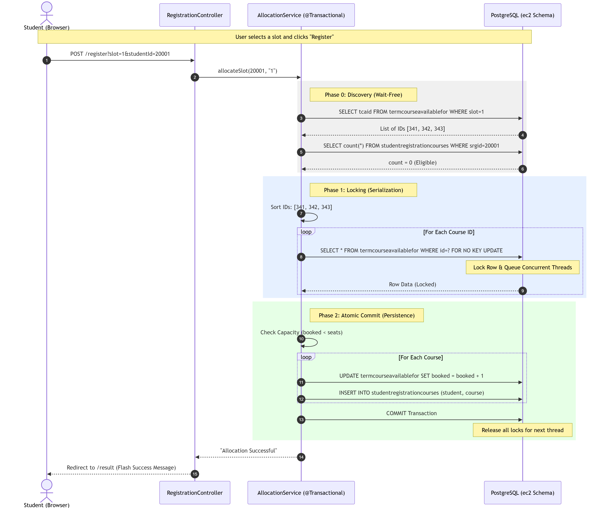
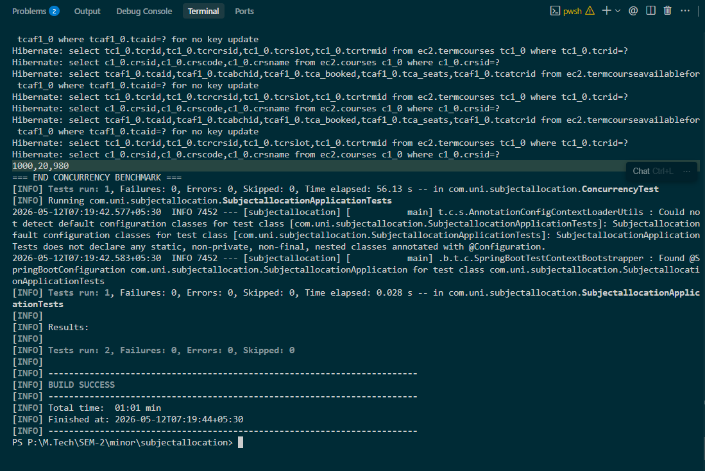

A High-Concurrency Concurrency-Safe Registration System using Pessimistic Locking
PRESENTED BY
Priyansee Mukeshkumar Soni
ID: 202511011
SUPERVISED BY
Prof. P M Jat
M.Tech ICT, DAU
This session provides a technical walkthrough from problem identification to the implementation of a mathematically safe allocation engine.
Concurrent read-modify-write operations on un-synchronized resources lead to "Lost Updates".
When T1 and T2 read the same state simultaneously, T2's write overwrites T1's, effectively "losing" an update and breaking data integrity.
Optimistic locking with retries destroys the "First-Come-First-Serve" requirement.
"Barging" occurs when a late-comer acquires a lock while an earlier request is in a "back-off" period following a collision.
Requests that arrive earlier must be served before later ones — no thread barging allowed.
Concurrent transactions must never stall each other in circular lock waits.
A student is enrolled in all courses within a slot, or none — no partial allocations possible.
These objectives ensure that the system is both concurrency-safe and operationally reliable.
Leveraging modern, enterprise-grade frameworks to ensure high availability and robust transactional control.
A clean MVC-Service-Repository separation allows the concurrency logic to be isolated within the Service layer.
Captures user intent and submits the registration form via POST.
<form th:action="@{/register}" method="post"> ... </form>
Maps the HTTP request to the internal system logic and manages redirection.
@PostMapping("/register") -> allocationService.allocateSlot(sid, slot)
Enforces the 3-phase FCFS algorithm and manages Transaction boundaries.
@Transactional -> 2PL (Grow: Locking | Shrink: Committing)
Translates Java entities into optimized SQL with Pessimistic Locking hints.
@Lock(PESSIMISTIC_WRITE) -> findTcafByIdWithLock(id)
Physically serializes concurrent threads using Row-Level Locks and FIFO queues.
SELECT * FROM tcaf WHERE id = ? FOR NO KEY UPDATE;
A vertical slice showing how a user click becomes a hardware-level serialized resource access.
The TCAF table is the central point of contention. Row-level locks here synchronize the entire allocation process.
The algorithm separates "Resource Discovery" from "Resource Acquisition" to ensure a clean, deadlock-free locking flow.

This diagram traces the lifecycle of a request, highlighting how concurrent threads are serialized at the database level.
Filename: AllocationService.java
Strategy: Discovery phase is wait-free. We identify the target rows without blocking other students, ensuring system responsiveness during the initial request handling.
Filename: AllocationService.java
Strategy: Serialization. By sorting IDs and using FOR NO KEY UPDATE, we force concurrent requests for the same subjects into a strict FIFO queue in the database kernel.
Filename: AllocationService.java
The entire method is @Transactional. If any part of Phase 2 fails (e.g. seat full), the database rolls back all changes, ensuring 100% data integrity.
Threads B and C wait in the database kernel queue until Transaction A commits, effectively serializing the thundering herd.
FOR NO KEY UPDATE lock is held until the final COMMIT.T1 locks A, waits for B.
T2 locks B, waits for A.
→ DEADLOCK
Everyone sorts: A < B
T1 locks A, then B.
T2 waits for A.
→ SAFE
No thread can hold a higher ID and wait for a lower one, making deadlock structurally impossible.
Evidence of Pessimistic Locking and Transactional Queuing in the IDE terminal.

FOR NO KEY UPDATE confirms that the database handled the queuing.
Simulating a "Thundering Herd" of 1,000 threads hitting the DB simultaneously using ExecutorService and CountDownLatch.
Automated validation of edge cases: Invalid Slots, Already Enrolled, and Student Not Found scenarios.
Refuses to start on schema mismatch — protected shared tables from silent corruption during iterative dev.
Scopes all queries to the active academic term — prevents stale-term allocations.
Caps the connection pool; beyond this, threads queue for connections before even reaching row-lock queue.
These configuration choices ensure system stability and predictable behavior during deployment.
"Elective registration is a test of database integrity, not just application logic. Through pessimistic locking and sorted acquisition, we achieved 100% safety with zero overbookings."
Questions? Discussions? Feedback?
Priyansee Mukeshkumar Soni
ID: 202511011 | M.Tech Minor Project
Dhirubhai Ambani University